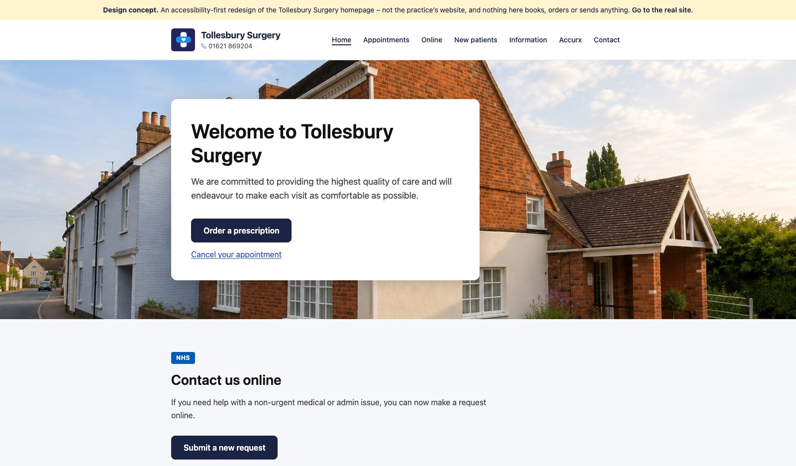
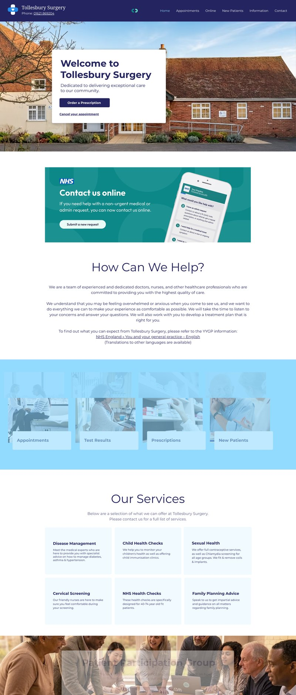
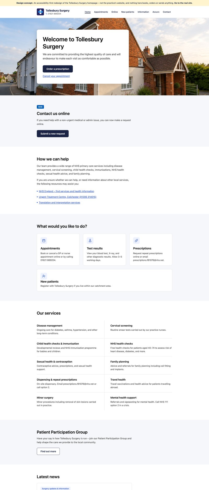

NHS · Accessibility · Healthcare · Primary care
Tollesbury Surgery
An accessibility-first homepage concept for the village GP practice, built in thirty minutes to show what the approach looks like, and partly adopted by the surgery since.
- Figma Make
- React
- WCAG 2.2 AA
- axe-core
- Vite
- Vercel

The problem
A GP surgery homepage has one job: get a patient to the thing they came for. Most of the time that is ordering a repeat prescription, cancelling an appointment, or finding the phone number. Yet practice websites, usually built on a shared NHS template, tend to bury those tasks under news, notices and navigation, and to set them in small, low-contrast type that the practice’s older patients find hardest to read.
The approach
This concept puts the two commonest tasks in the banner, in plain words, before anything else. Each section below it does one thing and says so in its heading. Body text is 16 to 18 pixels; every colour clears WCAG 2.2 AA contrast; every control is reachable and visibly focused from the keyboard; touch targets are 44 pixels or larger; and the page honours the operating system’s reduced-motion setting. None of this is exotic. It is simply what happens when accessibility is the starting point rather than an audit at the end.
The outcome
The mockup was made in Figma Make in about thirty minutes, including retouching the photograph, and shown to the practice as a demonstration rather than a proposal. Some of the recommendations, the main banner among them, have since been adopted on the surgery’s own site. The code was then tidied by hand: the exported component library and fifty unused dependencies went, hover states moved from JavaScript into CSS so keyboard users get the same feedback, and the contrast failures in the export were fixed.
The demonstration is deliberately kept out of search engines, so nobody finds it and mistakes it for the practice’s website. It carries a notice to that effect and links to the real one.

